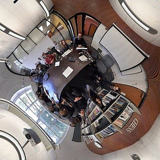
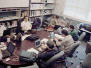

Participants in the Ptolemy Project

Photograph (Peirce Quincuncial) by Chamberlain Fong, 2010

The Ptolemy and Tycho projects take their names from these historical figures:
- Claudius Ptolemaeus
- Astronomer
- Ptolemy II
- Egyptian King
- Tycho Brahe
- Astronomer
- Edward A. Lee (Professor Edward A. Lee)
- Director
- Christopher Brooks (cxh (at) eecs)
- CHESS Executive Director, Ptolemy software manager
- Barb Hoversten (bhovers (at) eecs berkeley edu)
- TerraSwarm Administrative Manager & Professor Lee's Administrative Assistant
- Yulia Golubovskaya (yulia (at) erso berkeley edu)
- Grant Administration
- Mary P. Stewart (marys (at) eecs)
- System administration
- Stavros Tripakis (stavros (at) eecs)
- Researcher, Modular Code Generation, Interfaces for Component-based design
- Fabio Cremona (fcremona (at) berkeley.edu)
- Visiting Graduate Student Researcher, Sept 2014 - present
- Marco Marazza (mmarazza (at) berkeley.edu)
- Visiting Graduate Student Researcher, Sept 2014 - present
- Akihito Iwai (akihito_iwai (at) denso_diam.com)
- Visiting Industrial Fellow (Denso), Sept 2014 - present
- Hugo Andrade (hugo.andrade (at) ni com)
- Visiting Industrial Fellow (National Instruments), 2007 - present
- Patricia Derler (pd (at) eecs)
- Postdoctoral Researcher, 2010 - present
- John Eidson (john-eidson (at) stanfordalumni org)
- Visiting Scholar IEEE 1588, 2009 - present
- Shuhei Emoto (syuuhei_emoto (at) ihi co jp)
- Visiting Industrial Fellow, January 2014 - present
- Mai Kimura (mai_kimura (at) ihi co jp)
- Visiting Industrial Fellow, January 2014 - present
- Eleftherios D. Matsikoudis (ematsi (at) eecs)
- Postdoctoral Researcher, 2011 - present
- Tomi Räty (Tomi.Raty (at) vtt.fi)
- Industrial Visitor October, 2011 - present
- Mehrdad Niknami (mniknami (at) berkeley.edu)
- Visiting Graduate Student, Sept. 2014 - present
- Armin Wasicek (armin.wasicek (at) tuwien.ac.at)
- Visiting Scholar, June, 2013 - present
- Marten Lohstroh (marten (at) eecs)
- Graduate Student, Sept. 2014 - present
- Gil Lederman (glederman (at) eecs)
- Graduate Student, Sept. 2014 - present
- Ilge Akkaya (ilgea (at) eecs)
- Hokeun Kim (hokeunkim (at) eecs.berkeley.edu)
- Graduate student, 2012 - present
- Chris Shaver (shaver (at) eecs)
- Graduate student, 2010 - present
- Matt Weber (matt.weber (at) berkeley edu)
- Graduate student, 2013 - present
- Mike Zimmer (mzimmer (at) eecs)
- Graduate student, 2010 - present
- Ben Zhang (benzh (at) eecs.berkeley.edu)
- Graduate student, 2012 - present
If you would like to work with the Ptolemy group, contact Professor Edward A. Lee
- John Barry (Georgia Institute of Technology ) (john.barry (at) ee gatech edu)
- Optical communications, Ph.D. student 1986-1992.
- Shuvra S. Bhattacharyya University of Maryland at College Park (ssb (at) eng umd edu)
- Code generation, dataflow, scheduling, software synthesis. Master's student 1987-1991 and Ph.D. student 1992-1994. Developing C code generation for Ptolemy II 01-04
- Joseph T. Buck (Synopsys, Inc.) (jbuck (at) synopsys com)
- Boolean dataflow, Ptolemy kernel, Linux port, ptcl, ptlang, scheduling, Motorola DSP assembly code generation, Ph.D. student 1989-1993.
- Dai Bui
- Graduate student, 2007-2013, PRET
- Adam Cataldo LinkedIn
- Ph.D. student 2001-2006, "Higher-Order Composition Languages," Soft Walls.
- Wan-Teh Chang
- Hierarchical finite-state machine controllers, telecommunications software, graphical user interfaces, higher-order functions, Ptolemy kernel, Tycho. Ph.D. student, 1996.
- Elaine Cheong (celaine (at) cal berkeley edu )
- Graduate student: 2000-2007, Staff: Fall, 2007 Viptos - Visual interface between Ptolemy and TinyOS, Actor-Oriented Programming for Wireless Sensor Networks, TRUST, ARO Scalable Composition of Subsystems (SCOS)
- John Davis, II (john (at) foobox com)
- Mutable systems, higher order functions, Ph.D. student 1994-2000, "Order and Containment in Concurrent System Design"
- Stephen Edwards Columbia University
- Synchronous/Reactive domain, hierarchical finite state machines, Statecharts, Esterel, Esterel compilers, Ph.D. student 1994-1997.
- Michael Goodwin (mmg (at) yellowstone esd sgi com)
- Audio signal processing, time-frequency analysis and synthesis, computer music. Ph.D. student 1995-1998, "Adaptive Signal Models: Theory, Algorithms, and Audio Applications"
- Thomas Huining Feng (LinkedIn.com) (tfeng (at) linkedin com)
- Ph.D. 2004-2009, "Model Transformation with Hierarchical Discrete-Event Control", "Distributed Modeling and Simulation with Backtracking", ARO Scalable Composition of Subsystems (SCOS)
- Soonhoi Ha (Seoul National University) (sha (at) snucom snu ac kr)
- Scheduling, dynamic dataflow, discrete-event domain, code generation, Ph.D. student 1988-1992.
- Asawaree Kalavade (Bell Labs) (kalavade (at) bell-labs com)
- Hardware/software partitioning and codesign, design methodology management, Thor, Silage, and design methodology management domains, Ph.D. student 1990-1995.
- Bilung Lee
- Image and video processing, telecommunications software, Ph.D. student 1994- 2000, "Specification and Design of Reactive Systems"
- Seungjun Lee
- Communicating processes domain, Thor domain. Ph.D. student 1989-1991.
- Ben Lickly (blickly (at) cal berkeley edu)
- Programing Languages, Compilers, and Static Analysis. Ph.D. student, 2007-2012, "Static Model Analysis with Lattice-based Ontologies"
- Jie Liu (Microsoft Research) (liuj (at) microsoft com)
- Mixed-signal design, hybrid systems, CT domain, TM domain, a theory of frameworks. Ph.D. student 1996-2002, "Responsible Frameworks for Heterogeneous Modeling and Design of Embedded Systems"
- Isaac Liu (liuisaac (at) berkeley edu)
- Ph.D. student, 2007-2012, "Precision Timed Machines"
- Xiaojun Liu (salesforce.com) (xiaojun dot liu (at) cal dot berkeley dot edu)
- Finite state machines, Ph.D. student 1998-2005, "Semantic Foundation of the Tagged Signal Model"
- Slobodan Matic (matic at eecs)
- "Compositionality in Deterministic Real-Time Embedded Systems"
- Eleftherios D. Matsikoudis (ematsi (at) eecs)
- Graduate Student -2011, Postdoc 2011 - present "Axioms for Asynchronous Processes"
- Praveen K. Murthy
- Scheduling, code generation, multidimensional dataflow, semantical issues in dataflow. Master's and Ph.D. student 1991-1996.
- Stephen Neuendorffer
- Vergil, SDF Code generation. Master's and Ph.D. student, 1998-2004, "Actor-Oriented Metaprogramming"
- Thomas M. Parks
- Real-time computing, process networks, higher-order functions, code generati on in C domain, Ph.D. student 1990-1995.
- Hiren Patel (hiren at eecs)
- Postdoctoral Researcher, PRET, 2007-2009
- Gilbert C. Sih
- Parallel scheduling, interprocessor communication, Ph.D. student 1987-1991.
- S. Sriram (Texas Instruments) (sriram (at) ti com)
- Parallel architectures, interprocessor communication, scheduling theory, Motorola DSP assembly code generation, Ph.D. student 1990-1995.
- Christos Stergiou
- Graduate student, 2011-2013, Schedulability Analysis and Verification of Real-Time Discrete-Event Systems
- Maarten Wiggers (maarten.wiggers (at) gmail)
- Postdoctoral Researcher, 2010
- Michael C. Williamson (michaelw (at) cadence)
- Generating timed circuits from dataflow graphs, VHDL modeling, VHDL domain, Ph.D. student 1994-1999, "Synthesis of Parallel Hardware Implementations from Synchronous Dataflow Graph Specifications"
- Yuhong Xiong (yhxiong (at) yahoo)
- Ph.D. Student, 1996-2002, "An Extensible Type System for Component-Based Design"
- Haiyang Zheng (hyzheng (at) nyu dot edu)
- Ph.D. Student, 2001-2007, "Operational Semantics of Hybrid Systems"
- Yang Zhao (ellen_zh at eecs)
- Graduate Student, 2002-2009, "On the Design of Concurrent, Distributed Real-Time Systems", PTIDES: Programming Temporally Integrated Distributed Embedded Systems
- Gang Zhou (zgang@eecs.berkeley.edu)
- Ph.D. student, 2003-2008, "Partial Evaluation for Optimized Compilation of Actor-Oriented Models", Code Generation Framework in Ptolemy II, Partial Evaluation for Optimized Compilation of Actor-Oriented Models.
- Ye (Rachel) Zhou (zhouye at eecs)
- Ph.D. Student, 2002-2007, "Interface Theories for Causality Analysis in Actor Networks"
- Jia Zou (jiazou (at) google dot com)
- PTIDES, Ph.D. student, 2007-2011, "From Ptides to PtidyOS, Designing Distributed Real-Time Embedded Systems"
- David Broman (david.broman at liu se)
- December, 2011 - 2014
- Jian Cai (jcai19 (at) @asu.edu)
- Visiting Student (Arizona State University), July, 2012 - April, 2013
- Janette Cardoso (janette.cardoso (at) isae fr)
- Visiting Scholar, 9/2010-8/2011
- Chihhong Patrick Cheng
- Visiting exchange graduate student, 2007 - 2008, Video and image processing, PARLAB
- Jim Armstrong
- Visiting Professor from Virginia Tech, January-June 2002.
- Daniel Lazaro Cuadrado
- Visiting Scholar, Summer 2003
- Johan Eker, Lundt Institute of Technology
- Cal actor language design, TM modeling. Post-doctoral Researcher 2001. (johan dot eker (at) ericsson dot com)
- Brian L. Evans (The University of Texas at Austin) (bevans (at) ece utexas edu)
- Algorithm design, multidimensional signal processing, educational software, graphical user interfaces, Ptolemy Matlab/Mathematica interfaces, Tycho, Post-Doctoral Researcher 1993-1996.
- Gerhard Fettweis
- Visiting faculty, 9/2009-2/2010
- Teale Fristoe (fristoe at gmail)
- Volunteer, then staff, 2007-2008
- Soheil Ghiasi (ghiasi (at) ucdavis edu)
- Visiting Scholar, 9/2010-12/2010
- Marc Geilen (M.C.W.Geilen at tue.nl)
- Visiting Faculty, 2/2010-6/2010
- Arne Huseby
- Visiting Scholar from University of Oslo, 2005-2006.
- Tatsuaki Iwata (tatsuaki.iwata (at) toshiba co jp )
- Visiting Industrial Fellow (Toshiba), 1/2010-2/2011, Reactable project
- Jörn W. Janneck, Xilinx Research Labs (jwj (at) moulinot net)
- Cal Actor language, 2002-2004
- Rowland R. Johnson (rowland-johnson at llnl gov )
- Visiting Scholar (from LLNL), 2003.
- Bart Kienhuis
- System level design using abstract modeling of architectures and applications, Post Doc 1998-2000.
- Sungjun Kim (sk3062 at columbia edu)
- Visiting Graduate Researcher, Summer, 2009
- Yooseong Kim (ykim122 (at) asu.edu)
- Visiting Student (Arizona State University), July, 2012-October, 2014
- Ichiro Kuroda (NEC) (kuroda (at) dsp cl nec co jp)
- Kernel development (parameter and state specification and parsing), Visiting Industrial Fellow 1989-1990.
- Marten Lohstroh (marten (at) eecs)
- Visiting Student Researcher, 2011-2012
- James L. Lundblad
- Developed Adaptive Computing Systems (ACS) domain with Sanders
Postdoctoral Researcher 1998.
- Farhad Mavaddat
- Visiting Professor (University of Waterloo, Ontario, Canada), 2000-2001.
- Thomas Mandl (Thomas.Mandl at us bosch com)
- Visiting Industrial Fellow, Pthomas project (Bosch), 2006-2009
- Slobodan Matic (matic (at) eecs)
- Postdoctoral Researcher, PTIDES, 2007-2011
- Yoshio Miki (Hitachi, Ltd.)
- Control logic generation, performance estimation of pipelines, interface between the SDF and DE domains, Visiting Industrial Scholar 1995.
- Takashi Miyazaki (NEC)
- Real-time video signal processing, DSP architectures, Visiting Industrial Fellow.
- Joseph Ng (jng (at) comp (dot) hkbu.edu.hk)
- Visiting Faculty, February 2014 - July 2014
- Hwa-yong Oh (hwayong.oh at gmail)
- Postdoctoral Researcher, video and image processing, 2007-2008.
- Minxue Pan (panmx (at) eecs)
- Visiting graduate student, 10/2009-12/2010?
- John Reekie
- Architect of Diva and the Ptolemy software engineering process
- Stefan Resmerita (stefanr at eecs)
- APES (simulation of legacy code on RTOS), Visiting Industrial Fellow (University of Salzburg and Toyota) 10/08-2/09,
- Jan Reineke (reineke (at) eecs)
- Postdoctoral Researcher, 2009-12/2011
- Bert Rodiers (rodiers at eecs)
- Software Engineer (9/08-9/09)
- Sonia Sachs
- Visiting Researcher, 2000-2001.
- Martin Schöberl (martin (at) jopdesign com)
- JOP Code Generation. Visiting faculty, 10/2009-1/2010
- Aviral Shrivastava (Aviral.Shrivastava (at) asu.edu)
- Visiting Faculty (Arizona State University), July 2012 - May 2014
- MyoungKyu Sohn (smk (at) eecs berkeley edu)
- Visiting Industrial Fellow (Daegue Gyeongbuk Institute of Science and Technology), 2006-2007
- Fabian Stahnke (fabian.stahnke@tum.de (at) tum.de)
- Visiting Student Researcher (Technische Universität München), February-July, 2014
- Richard S. Stevens
- (dick.stevens (at) maine rr com)
- Models and multiprocessor scheduling of dynamic dataflow computation, Processing Graph Method Navy standard
- Juergen Teich (ETH-Zurich) (teich (at) tik ethz ch)
- Scheduling, optimization, mixed synchronous/asynchronous systems, Postdoctoral Researcher 1994.
- Martin Törngren (martin (at) @md.kth.se)
- Visiting Scholar, August, 2011-June, 2012
- Hallvard Traetteberg (hal (at) idi.ntnu.no)
- Visiting Faculty (Norwegian University of Science and Technology (NTNU), Trondheim) July, 2012-July, 2013
- Win Williams (winthrop (at) eecs berkeley edu)
- Visiting Researcher, 2001-2002.
- Shamik Bandyopadhyay (bandyos (at) eecs.berkeley.edu)
- Scratchpad memory, Master's student, 2005-2007.
- Jeff C. Bier (Berkeley Design Technology, Inc.) (jeff (at) bdti com)
- Master's student, 1990-1992.
- Michael J. Chen (Geoworks) (mchen (at) geoworks com)
- Multidimensional dataflow and signal processing, Master's student 1993-1994.
- Yasemin Demir
- Master's student, joint with Prof. Bajcsy, 2008-2010
- Rolando Diesta
- Discrete-event applications, networks, Master's student 1991-1995.
- Chamberlain Fong
- Visual simulation. Master's student 2000-2001.
- Shanna-Shaye Forbes
- Master's student 2007-2011
- Martha Fratt
- Speech processing, Gabriel, Master's student 1989-1990.
- Ron Galicia (rgalicia (at) earthlink net)
- Embedded multicomputing, real-time computer vision and image processing, hardware/software codesign. Master's student 1998-1999.
- Edwin E. Goei (Sun) (edg (at) eng sun com)
- Vem schematic interface. Master's student, 1988-1989.
- Mudit Goel (mudit (at) desktop com)
- Adaptive Digital Signal Processing; Master's student 1997-98.
- Mike Grimwood
- Digital infrared communication links, Gabriel, Master's student 1989-1990.
- Eric Guntvedt
- Gabriel. Master's student, 1987-1988.
- Holly Heine
- Graphical user interface in Gabriel. Master's student 1986-1987.
- Tony Huang (tonyh2986 at berkeley)
- Undergraduate student, 10/2008 - ?, working with Man-kit Leung on FreeRTOS
- Wei Hung Ho
- Gabriel demonstrations. Master's student 1987-1988.
- Steve How
- Code generation, multirate systems, Gabriel, Master's student 1989-1990.
- Jeff Jensen (jeff (at) nullptr com)
- Master's student, 2009-2010
- Joel King
- Spice domain, mixed-signal simulation and IC design, Tycho, Master's student 1995-1996.
- Sanjeev Kohli (sanjeev_berkeley (at) yahoo com)
- Cache Aware Scheduling for Synchronous Dataflow Programs, Master's student 2002-2004.
- Vinay Krishnan ( nvkris at yahoo com )
- Time Triggered Real-Time Systems Design, Master's student 2002-2004.
- Brian Lam (brlam at berkeley)
- Undergraduate student, summer 2009
- Allen Lao (Applied Signal Technology) (ayl (at) appsig com)
- Message queue domain, ATM network simulations (video). Master's student 1992-1993.
- Phil D. Lapsley (Berkeley Design Technology, Inc.) (phil (at) bdti com)
- Dataflow modeling, Motorola DSP assembly code generation, workstation and DS P board interfaces, Gabriel, Master's student 1990-1991.
- Man-kit (Jackie) Leung (jleung (at) berkeley edu)
- Master's student, 2006-2009
- Sam Mansfield (samgmansfield (at) gmail.com)
- Undergraduate, Fall, 2013
- Brian Mountford
- Gabriel. Master's student 1987-1988.
- Lukito Muliadi
- Discrete-event modeling and simulation; Master's student 1998-99.
- Maureen O'Reilly
- Motorola DSP assembly code generation in Gabriel, modem design, Master's student 1989-1990.
- José Luis Pino (Agilent Technologies, EEsof EDA) (jpino (at) agilent com)
- Agilent Ptolemy, Mixed signal simulation & verification, Multiprocessor scheduling, code generation for heterogeneous DSP systems, hierarchical scheduling. Master's student 1994-1996.
- Farhana Sheikh (farhana (at) eecs berkeley edu)
- Visual design methodology for real-time systems, parallel and distributed processing, and video signal processing, Master's student 1995-1996.
- Sun-Inn Shih
- Real-time video signal processing, code generation, Master's student 1993-1994.
- Neil Smyth (neilasmyth (at) yahoo com)
- Redevelopment of Ptolemy kernel in Java, Master's student 1997-98.
- Jeffrey C. Tsay (jctsay (at) netscape net)
- Mathematical algorithms for signal processing, multimedia applications, Java Code Generation, Master's student 1998-2000.
- Brian K. Vogel
- Signal Processing, Master's student 2000-2001.
- Gregory S. Walter
- ATM networks, speech coding, Master's student 1991-1992.
- Patrick J. Warner
- Parallel processing, interprocessor communication, network of workstations target. Master's student 1997.
- Paul Whitaker
- Synchronous/Reactive domain, User Interface, Master's student 2001.
- Kennard D. White (Diva Communications) (kennard (at) diva com)
- C and Motorola DSP assembly code generation, CM5 target, user interfaces: tkoct and Xpole, filter design, Master's student 1989-1993.
- Andria Wong
- Gabriel. Master's student 1987-1988.
- Anthony Wong
- Assembly code generation in Gabriel, Master's student 1991-1992.
- Bicheng William Wu
- Design of interactive digital signal processing tool
Master's student 1997-99.
- James Yeh (jiahau (at) alumni eecs berkeley edu)
- Image and Video Processing, Master's student 2002-2003
- Mei Xiao (Tyecin Systems Inc.) (xmei (at) tyecin com)
- Image processing, graphical user interfaces, Master's student 1993-1995.
- Iman Ahmadi (imanahmadi at hotmail com ) Softwalls, 2003
- Raza Ahmed (Tektronix Inc.) (razaa (at) master cna tek com)
- Heuristic search packages for Mathematica, implementation cost target, Undergraduate researcher 1996.
- Christine Avanessians
- Undergrad, 2006 - 2008, XML in Ptolemy II, AF-TRUST.
- Steve Bako (bkurosawa (at) berkeley edu)
- Reactable project, Undergraduate, 2010
- Ian (Yanming) Chen (phoenix.cym at gmail)
- Code Generation, January 2014 - present
- Zhongning Chen (czn at uclink berkeley edu ) Softwalls, 2003
- Kang Ngee Chia (UCLA) (kangngee (at) ee ucla edu)
- Code generation in C, Undergraduate Researcher Summer 1995.
- Steve X. Gu (Nortel, formerly Northern Telecom) (stevegu (at) ntmtv com)
- Tcl/Tk interface to Mathematica, educational software, software for wireless communications systems, Undergraduate Researcher 1994-1995.
- Luis Gutierrez
- Motorola 56000 Code Generation Stars, Texas Instruments C50 Domain, real-time video processing in embedded systems, Undergraduate Researcher 1996-1997.
- Siyuan (Jack) He (siyuanhe at berkeley.edu)
- Code Generation, January 2014 - present
- Wei-Jen Huang (Stanford University)
- Graphical user interface, Undergraduate Researcher 1994.
- Farhad Jalilvand (Intel) (farhad_jalilvand (at) intel com)
- Communications demonstrations and subsystems, Undergraduate Researcher 1995.
- David Chun-Keung Lee
- Localization of experimental vehicles using computer vision, Undergraduate researcher, 2001-2002.
- Yu Kee Lim
- Software quality (debugging and documentation), developing new CGC stars, matrix support for code generation domains, ptdsp library, Undergraduate student researcher 1996.
- Minh Van Ly (Larry) (mvly at berkeley)
- Undergrad, 2007-2008
- Dorsa Sadigh (dsadigh (at) berkeley edu)
- Reactable project, Undergraduate, 2010
- Mandeep Singh (masingh (at) uclink4 berkeley edu)
- Math package tests, Undergraduate researcher 2002.
- Matthew Tavis (Sapient) (mtavis (at) sapient com)
- Graphical user interfaces, Tycho, Undergraduate researcher 1995-1996.
- Warren W. Tsai
- VHDL modeling, Undergraduate Researcher 1995.
- Paul Yang (pablobear21 at hotmail com ) Localization, Spring'-02
- Zoltan Kemenczy (Research in Motion, Ltd. (mailto:zkemenczy (at) rim net)
- Ptolemy II Matlab Expression Actor, Expression Actor rework.
- Sean Simmons (Research in Motion, Ltd. (mailto:SSimmons (at) rim net)
- Jens Voigt (voigtje (at) ifn et tu-dresden de) (Dresden University of Technology Communications Laboratory)
- Dynamic Higher Order Functions in the DE Domain, C++ Ptolemy/Java interface.
- Neil E. Turner (ptolemy (at) myrealbox com)
- Chess Programmer, 2003
- Michael Wirthlin
- JHDL/Ptolemy II Interface (Brigham Young University) ( wirthlin (at) ee byu edu )
- Egbert Ammicht (AT&T) (E.Ammicht (at) att com)
- DSP3 code generation.
- Anindo Banerjea
- Discrete-event scheduling.
- Neal Becker (Comsat Laboratories) ( Neal.Becker (at) comsat com)
- HP and Linux port, incremental linking development, user contributed stars.
- Michael Bosse (Boston University) (zanj (at) bu edu)
- Tcl/Tk visualization in the IPUS domain (Integrated Processing and Understanding of Signals).
- Rachel Bowers
- Ptolemy demonstrations.
- Bill Bush
- Vem schematic interface.
- Andrea Casotto
- Vem schematic interface.
- William Chen (Columbia University) (bchen (at) ctr columbia edu)
- Native signal processing on the UltraSparc.
- Cliff Cordeiro
- Interactive documentation.
- Gyorgy Csertan (Technical University of Budapest)
- Converted Ptolemy 0.5.1 documentation to on-line hypertext HTML format.
- Peter Dufault (HD Associates, Inc.) ( dufault (at) hda com)
- FreeBSD port.
- Chandan Egbert
- Beta testing.
- Yair Enden (Motorola)
- Fix-point blocks in the CGC domain.
- Dirk Forchel (Technical University Dresden, Fraunhofer Institute for Integrated Circuits) ( d2f (at) inf tu dresden de and forchel (at) eas iis fhg de)
- Code Generation for the Dynamic Dataflow Domain (CGDDF) and Linux port.
- Erick Hamilton
- Ptolemy Demonstrations. Graduate student 1978.
- Richard Han
- Discrete-event applications, encryption in high error-rate applications, The Infopad Project .
- David Harrison
- Vem schematic interface.
- Paul E. Haskell (Compression Labs)
- Image processing, video processing, and networks.
- Fritz Heinrichmeyer (FernUniverstitat at Hagen) ( fritz.heinrichmeyer (at) fernuni-hagen de)
- Code generation domain for the TMS320C50 DSP processor.
- Roger Hillson (Naval Research Laboratory) (hillson (at) ait nrl navy mil)
- Dataflow, VHDL domains.
- Sangjin Hong ( snjhong (at) eecs umich edu )
- Heterogeneous architecture design and simulation, communicating process domain.
- Chih-Tsung Huang
- Motorola DSP assembly code generation.
- Michael Huang (Boston University) (ghuang (at) bu edu)
- islang preprocessor for stars in IPUS domain (Integrated Processing and Understanding of Signals).
- Alan Kamas (Independent Consultant) (aok (at) holonet net)
- User Interface Design, Software Development, Project Manager 1991-1995
- Alireza Khazeni
- Implementing fixed-point arithmetic and stars.
- Karim Khiar (Thomson CSF ) (khiar (at) airsys thomson fr)
- Radar and higher-order functions, Visiting Master's student 1994.
- John Loh
- Message queue domain, ATM networks.
- Seehyun Kim (seehyun86 (at) gmail)
- Fixed-point computation, Postdoctoral Researcher 9/96-8/97.
- Ed Knightly (U.C. Berkeley)
- Discrete-event scheduling, networks, Ph.D. student 1991-1996.
- Alexander Kurpiers (Technical University of Darmstadt, Germany)
- AIX port.
- Tom Lane (Structured Software Systems) (tgl (at) sss pgh pa us)
- HP Port, many improvements to pigi and the kernel.
- Steven P. Levitan (Department of Electrical Engineering, University of Pittsburgh) ( steve (at) ee pitt edu )
- Computer Aided Design and Simulation of Free Space Optoelectronic Information Processing Systems
- William Li
- Collaborating instances of Ptolemy, The Infopad Project .
- David G. Messerschmitt
- Professor, and Acting Dean, SIMS
messer (at) eecs berkeley edu
- Rajagopal Nagarajan (Department of Computing, Imperial College, London ) (R.Nagarajan (at) doc.ic.ac.uk)
- Logic, concurrency, programming language semantics, specification and verification.
- Douglas Niehaus (University of Kansas)
- xxx domain, Tcl/Tk interface, pigi/oct interface.
- Eric K. Pauer (Zoll Medical Corporation) (epauer (at) zoll.com)
- Adaptive Computing Systems (ACS) domain, Architecture Trade Application.
- Johnathan Reason (U.C. Berkeley)
- NetBSD port, video coding over wireless networks, asynchronous video coding, The Infopad Project .
- Wolfgang Reimer (Technical University of Ilmenau, Germany) (reimer (at) e-technik tu-ilmenau de)
- Linux Ports.
- Sunil Samel (IMEC) (samel (at) imec be)
- HP port.
- Christopher Scannell (Naval Research Laboratory)
- Beta testing.
- Mario Jorge Silva (Enterprise Integration Technologies) (msilva (at) eit com)
- User interfaces.
- Rick L. Spickelmier
- Vem schematic interface.
- Richard Tobias (White Eagle Systems Technology) ( rjjt (at) westinc com )
- Solaris port.
- Stefan De Troch (IMEC) (detroch (at) imec be)
- HP port.
- Alberto Vignani
- Linux port. vier Warzee (Thomson C SF) (warzee (at) sctf thomson-csf fr)
- ArrayOL domain, IBM RS/6 000 port, Ptolemy evaluation.
- Anders Wass
- Thor domain.
- Joseph M. Winograd (Boston University) (winograd (at) bu edu)
- Knowledge-based signal processing, IPUS (Integrated Processing and Understanding of Signals) domain.
- Chris Yu (Naval Research Laboratory)
- Matrix representations.
Ptolemy group members can update this list by following the Instructions for updating the public Ptolemy site. The file to edit is ptweb/people/main.htm
While we make every effort to keep this page up to date, the following resources may help in finding a particular person